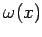
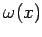
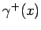
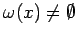
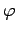
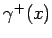
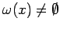
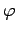

Inhalt Index DeskTop Bronstein

 Dynamische Systeme und Chaos Gewöhnliche Differentialgleichungen und Abbildungen Zeitdiskrete dynamische Systeme Ruhelagen, periodische Orbits und Grenzmengen
Dynamische Systeme und Chaos Gewöhnliche Differentialgleichungen und Abbildungen Zeitdiskrete dynamische Systeme Ruhelagen, periodische Orbits und Grenzmengen


Jede  -Grenzmenge  von (17.3) mit
-Grenzmenge  von (17.3) mit  ist abgeschlossen, und es gilt . Ist der Semiorbit  beschränkt, so ist  und ist invariant unter . Analoge Eigenschaften gelten für
ist abgeschlossen, und es gilt . Ist der Semiorbit  beschränkt, so ist  und ist invariant unter . Analoge Eigenschaften gelten für  -Grenzmengen.
-Grenzmengen.
| Beispiel |
|
Gegeben sei auf |